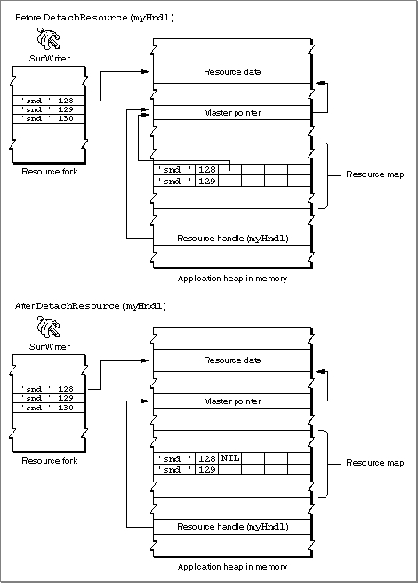

Releasing and Detaching Resources
When you've finished using a resource, you can callReleaseResourceto release the memory associated with that resource. For a given resource, theReleaseResourceprocedure releases the memory associated with the resource, setting the handle's master pointer toNIL, thus making your application's handle to the resource invalid. (This is similar to the situation shown in Figure 1-8.) After releasing a resource, use another Resource Manager routine if you need to use the resource again. For example, the code in Listing 1-3 first usesGetResourceto get a handle to a resource, manipulates
the resource, then usesReleaseResourcewhen the application has finished
using the resource. If the application needs the resource later, it must get a valid handle to the resource by reading the resource into memory again (usingGetResource, for example).Listing 1-3 Releasing a resource
PROCEDURE MyGetAndPlaySoundResource(resourceID: Integer); VAR myHndl: Handle; BEGIN myHndl := GetResource('snd ', resourceID); {use the resource} {when done, release the resource} ReleaseResource(myHndl); END;Your application can also use theDetachResourceprocedure to replace a resource's handle in the resource map with a handle whose value isNIL. However, theDetachResourceprocedure does not release the memory associated with the resource. You can useDetachResourcewhen you want your application to access the resource's data directly, without the aid of the Resource Manager, or when you need to pass the handle to a routine that does not accept a resource handle. (For example, theAddResourceroutine used in Listing 1-4 on page 1-18 takes a handle to data, not a handle to a resource.) Once you detach a resource, the Resource Manager does not recognize the resource's handle in the resource map in memory as a valid handle to a resource, but your application can still manipulate the resource's data through its own handle to the data.Figure 1-9 shows how both your application and the Resource Manager have a handle to a resource after your application calls
GetResource. The figure also shows how the Resource Manager replaces the handle in the resource map in memory with a handle whose value isNILwhen your application callsDetachResource.Figure 1-9 Detaching a resource

You can also easily copy a resource by first reading in the resource usingGetResource, detaching the resource usingDetachResource, then copying the resource by usingAddResource(and specifying a new resource ID). Listing 1-4 uses this technique to copy a resource within the current resource file.Listing 1-4 Detaching a resource
PROCEDURE MyCopyAResource(resourceType: ResType; resourceID: Integer; VAR myHndl: Handle); VAR newResourceID: Integer; BEGIN myHndl := GetResource(resourceType, resourceID); DetachResource(myHndl); {detach the resource} newResourceID := UniqueID(resourceType); AddResource(myHndl, resourceType, newResourceID, ''); END;